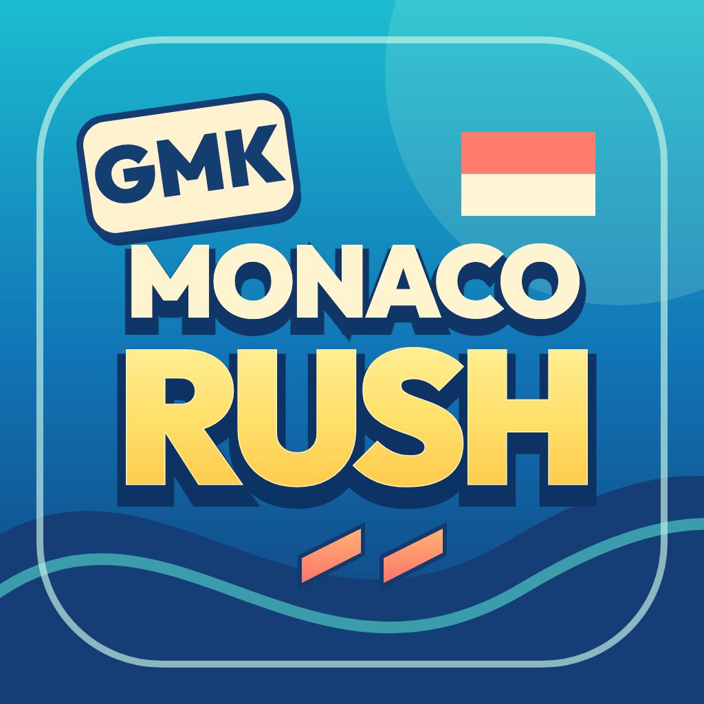

Android
APK · 47.3 Mo
Ouvre le fichier APK téléchargé, autorise cette source si Android le demande, puis confirme Installer.

MONACOLE ROCHER DANS TA POCHE
Neuf défis, douze voitures, tout Monaco.
Télécharge l’application et lance ton prochain run.
APK · 47.3 Mo
Ouvre le fichier APK téléchargé, autorise cette source si Android le demande, puis confirme Installer.
EXE · 160.3 Mo
Version de test non signée : Windows peut afficher un avertissement de sécurité. Ouvre l’installateur téléchargé pour installer le jeu.
Bientôt disponible
Le téléchargement apparaîtra ici quand cette version sera disponible.
ZIP · 45.6 Mo
Version de test : décompresse l’archive, déplace Monaco Rush dans Applications puis ouvre-la. Cette version n’est pas notariée.